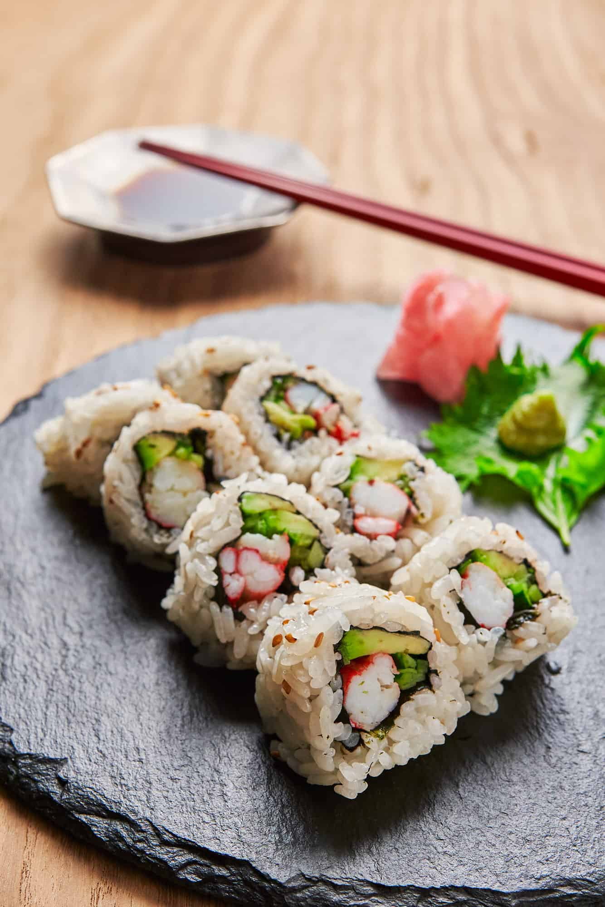
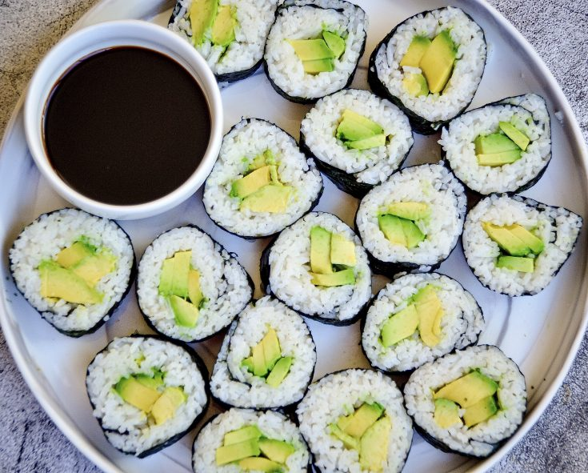
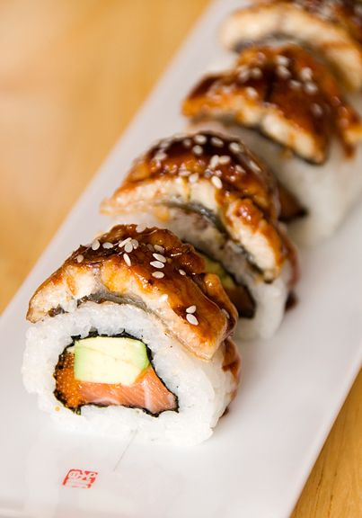

About Sushi

Sushi is traditionally made with medium-grain white rice, though it can be prepared with brown rice or short-grain rice. It is very often prepared with seafood, such as squid, eel, yellowtail, salmon, tuna or imitation crab meat. Many types of sushi are vegetarian. It is often served with pickled ginger (gari), wasabi, and soy sauce. Daikon radish or pickled daikon (takuan) are popular garnishes for the dish. For most people it is raw fish, star dish of Japanese cuisine, but is it that simple? Not at all. Sushi is actually a way to prepare rice, not raw fish with accompaniment ... In fact, sushi always carries rice but it does not have to carry fish. Sushi is the most famous Japanese dish outside of Japan and one of the most popular among Japanese, who enjoy sushi on special occasions. And as such, it was evolved outside that country, influenced by different Western cultures, especially in USA. That is why many of the different types of sushi have denomination of localities of USA (California roll, New York roll, etc.). The name of sushi is a generic name of different types, combinations of ingredients and forms of a typical Japanese food, and basically are made from Japanese type rice and different seafood (fresh fish, prawns, seaweed etc) and vegetables.
Although it seems a very simple dish, it hides a great variety of very different preparations, almost as many as the imagination of the Japanese chefs. Nigiri Sushi: The most consumed in Japan. It consists of pressing the rice in cylindrical form, and then putting a thin foil of raw fish on top. It is served with soy sauce to bathe the fish. Nigiri means something like "hand pressed". This type of sushi is the most common type at the sushi bar: A small oval made with rice, with an expertly cut slice of fish on top, and with a dab of wasabi on it. Most types of nigirisushi are meant to be dipped in soy sauce, and must be eaten in one bite, slowly. Close your eyes and feel the different textures in your mouth while you eat every piece. Maki Sushi: Here rice is put on the surface of a nori seaweed (dried seaweed) and fish, fruit and vegetables are added and rolled up. Once we have the roll it is cut into eight pieces. Also another variety of this type is to do it in reverse, in such a way that the rolled alga is inside and the rice outside. Maki in Japanese means coiling. So, they are rolled up like rice rolls, with the difference that in this case they are made with a thin sheet of seaweed (nori) of black color. They are of taste and soft texture in the palate and of a very delicate visual in its appearance. Inside it can be filled with fresh fish; algae; vegetables such as cucumbers, avocado; prawns; philadelfia cheese and all that the imagination of the sushimaster wants to dump on this delicious sushi.
| Name | Image | Ingredients |
|---|---|---|
| California Roll |  |
|
| Avocado Roll |  |
|
| Eel Roll |  |
|